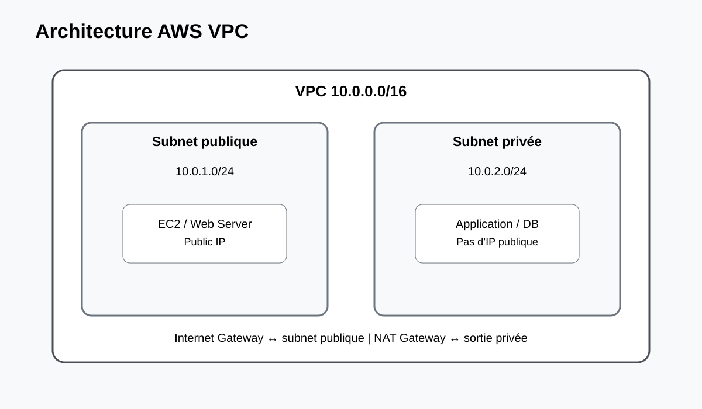

Ce travail pratique présente la conception et la mise en œuvre d'un Amazon Virtual Private Cloud (VPC). L'objectif est de construire une architecture réseau maîtrisée permettant de séparer les ressources publiques, privées et éventuellement isolées.
concevoir un espace d'adressage IPv4 en notation CIDR ;
créer un VPC et des sous-réseaux répartis sur plusieurs Availability Zones ;
configurer une Internet Gateway et des tables de routage ;
comprendre et mettre en œuvre un NAT Gateway pour les sorties Internet des ressources privées ;
différencier Security Groups et Network ACLs ;
tester la connectivité et diagnostiquer un problème de routage ou de filtrage.
Résultat attendu : une topologie VPC comprenant des sous-réseaux publics et privés, avec des routes explicites et des contrôles réseau adaptés.
2. Prérequis
Compte AWS actif et région choisie.
AWS CLI v2 installée et configurée, ou accès à AWS CloudShell.
Connaissances de base en IPv4, CIDR, routage et pare-feu.
Autorisations IAM permettant de créer et gérer les ressources VPC nécessaires.
Une paire de clés EC2 si une instance de test doit être administrée en SSH.
Vérification
aws sts get-caller-identity
aws configure get region
Important : ne placez jamais des clés d'accès AWS, des secrets ou des fichiers .pem dans le dépôt Git.
3. Concepts et architecture
Composant
Rôle
VPC
Réseau virtuel isolé dans une région AWS, défini notamment par un bloc CIDR.
Subnet
Subdivision du VPC associée à une Availability Zone.
Internet Gateway
Permet la connectivité Internet des ressources disposant d'un chemin de routage et d'une adresse publique.
NAT Gateway
Permet aux ressources privées d'initier des connexions IPv4 vers l'extérieur.
Route Table
Détermine la cible du trafic selon sa destination.
Security Group
Pare-feu stateful associé aux interfaces réseau.
Network ACL
Filtrage stateless au niveau du sous-réseau.
Topologie

Internet → Internet Gateway → Public Subnet → NAT Gateway
↓
Private Subnet → Application
↓
Data tier
VPC : 10.0.0.0/16
Public A : 10.0.1.0/24 Public B : 10.0.2.0/24
Private A: 10.0.11.0/24 Private B: 10.0.12.0/24
aws ec2 describe-nat-gateways --filter "Name=vpc-id,Values=vpc-xxxxxxxx" --query 'NatGateways[].State' --output text
7.4 Connectivité
Depuis une instance publique, tester Internet avec curl -I https://aws.amazon.com. Depuis une instance privée, vérifier que la sortie passe par le NAT et qu'aucune route directe vers l'Internet Gateway n'est associée au subnet privé.
8. Dépannage
Problème
Diagnostic
Action
Pas d'Internet
Route table, IGW, IP publique.
Vérifier route 0.0.0.0/0 et l'IGW.
Subnet privé sans sortie
État NAT et route privée.
Vérifier NAT, EIP et route par défaut.
SSH impossible
SG, NACL, route, adresse publique.
Limiter puis corriger les règles réseau.
Route absente
describe-route-tables.
Créer/associer la route table appropriée.
IP publique absente
Configuration du subnet/instance.
Associer une adresse publique ou utiliser une architecture adaptée.
9. Sécurité et bonnes pratiques
Utiliser des CIDR non chevauchants et une segmentation claire.
Ne pas exposer les subnets privés directement à Internet.
Limiter les Security Groups au strict nécessaire.
Comprendre que les Security Groups sont stateful et les NACLs stateless.
Utiliser VPC Flow Logs pour le diagnostic et l'audit lorsque nécessaire.
Protéger les ressources d'administration et limiter SSH/RDP.
Surveiller les coûts des NAT Gateway et arrêter les ressources inutiles après le TP.
Attention : un subnet « public » n'est pas sécurisé par son seul nom. Le routage, l'adressage et les règles de filtrage déterminent réellement son exposition.
10. Checklist
[ ] VPC CIDR défini
[ ] Subnets publics et privés non chevauchants
[ ] Internet Gateway attachée
[ ] Route table publique configurée
[ ] NAT Gateway placé dans un subnet public si requis
[ ] Route privée vers le NAT configurée
[ ] Security Groups limités
[ ] NACLs compris et vérifiés
[ ] Tests de connectivité réalisés
[ ] Flow Logs envisagés pour l'audit
[ ] Ressources inutiles supprimées après le TP
11. Conclusion
La mise en œuvre d'un VPC permet de construire une frontière réseau logique autour des workloads AWS. La séparation public/privé, les tables de routage, l'Internet Gateway et le NAT Gateway constituent les briques essentielles d'une architecture réseau cloud structurée.
Le TP met également en évidence que la sécurité réseau résulte de plusieurs contrôles complémentaires : routage, Security Groups, NACLs, IAM et journalisation. Cette approche prépare la conception d'architectures AWS plus robustes et évolutives.